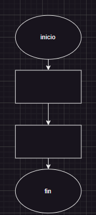

Estructura de control
Lineal
Esta es la estructura básica, ya que nos permite asegurar que una instrucción se ejecuta después de la otra siguiendo el orden en que fueron escritas. Es la más sencilla de todas, simplemente indica al procesador que debe ejecutar de forma consecutiva una lista de acciones. Para construir una secuencia de acciones basta con escribir cada acción en una linea diferente. En una estructura sceuencial una instrucción sigue a otra en una secuencia lineal.
La estructura de control secuencial es un mecanismo de programación que consiste en ejecutar las instrucciones de un programa en el orden en que aparecen en el código fuente. En este tipo de estructura, las acciones se suceden de manera que la salida de una es la entrada de la siguiente.
En una estructura secuencial, las tareas se realizan de la siguiente manera: Comienza el proceso, Se ejecuta la primera instrucción, Se ejecuta la segunda instrucción, Se ejecuta la tercera instrucción, Se finaliza el proceso.
